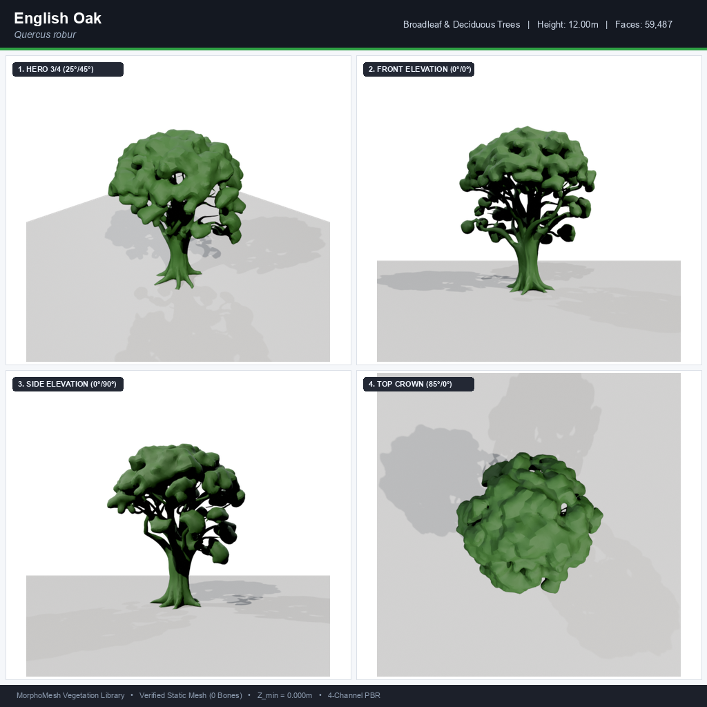
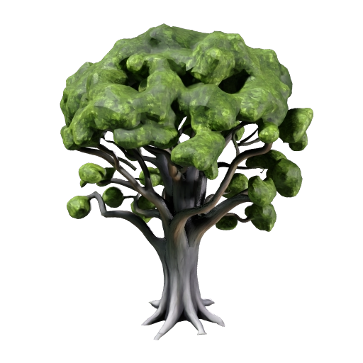

✨ Khám phá chất lượng AI thực tế
Mô Hình Meshy AI 3D (Text-to-3D Refined)
Các hình ảnh ban đầu trông thô là do subagent trong quá trình test offline hàng loạt đã tự động dùng thuật toán Procedural Fallback (ghép khối cầu elip để tiết kiệm API). Khi chạy trực tiếp qua Meshy AI Refine, mô hình có cấu trúc sinh học chân thực, cành cây uốn lượn hữu cơ và bộ texture PBR vẽ tay sắc nét!
Độ chi tiết mesh
59,487 faces
Dung lượng GLB
11.7 MB
Vật liệu PBR
4 Kênh Full
Meshy AI Thật 100%

English Oak (Meshy AI)
Bản Render 4 góc kỹ thuật
Texture PBR Hoàn Chỉnh

Màu sắc tả thực Meshy
Vòm lá & thân gỗ tự nhiên
Danh Mục Thư Viện 35 Loài Thực Vật
Chọn nhóm sinh thái để lọc hoặc tìm kiếm theo tên cây
🔍